Non un mockup disegnato: sono screenshot dell'app installata (branch main, commit
del 2026-09-09, telefono RFGL10YZ5RX), raccolti per avere una visione d'insieme di come
l'app è fatta oggi, dopo il recupero del redesign "Immersivo / Toxic Forest" — e per capire cosa
collega cosa, cosa manca, e dove il redesign non è arrivato dappertutto allo stesso livello.
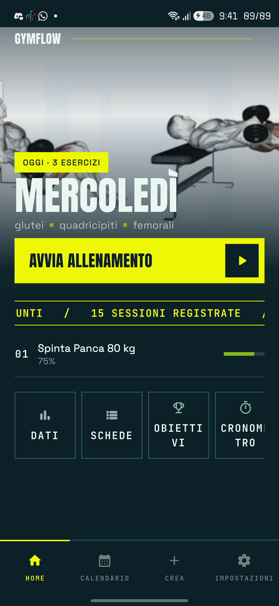
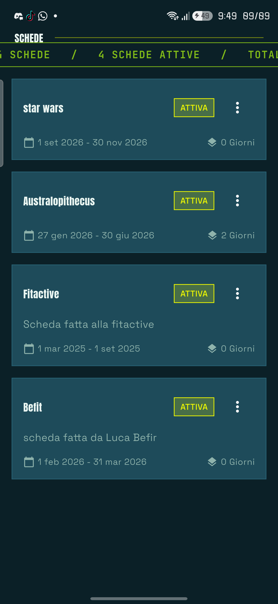
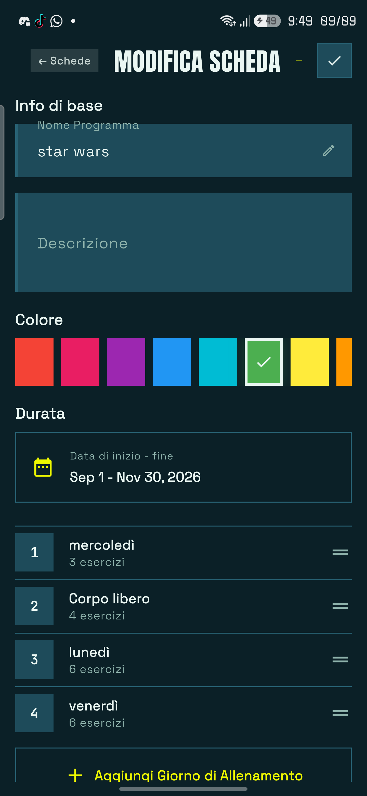
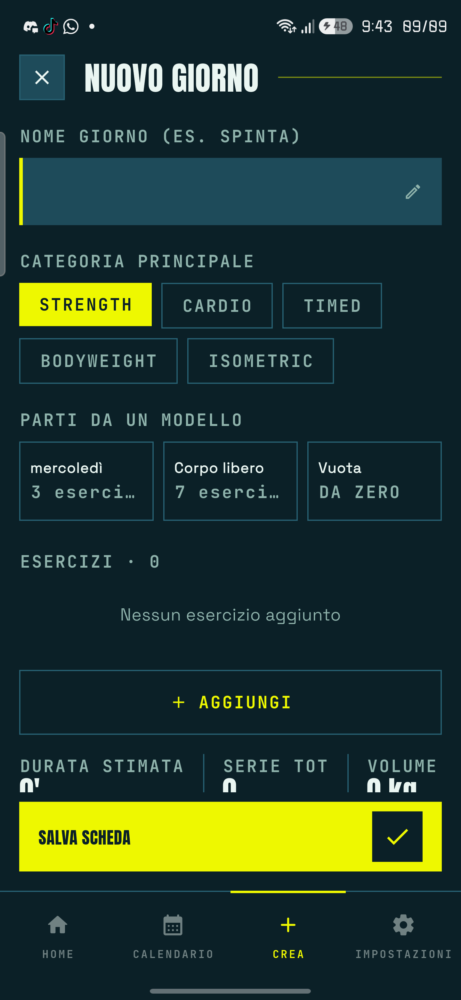
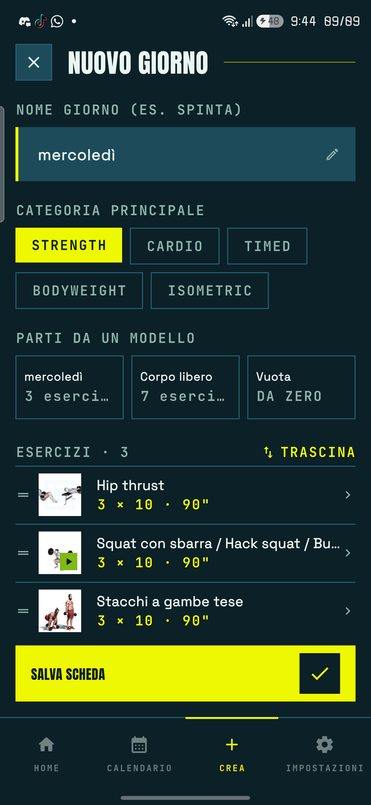
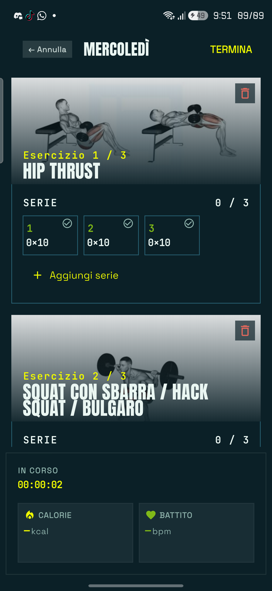
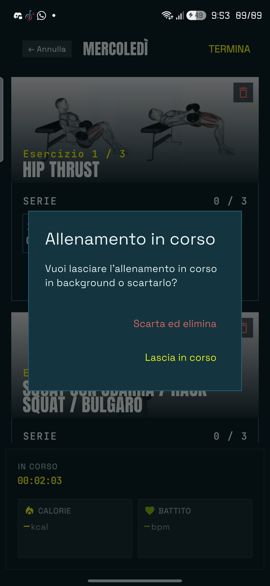
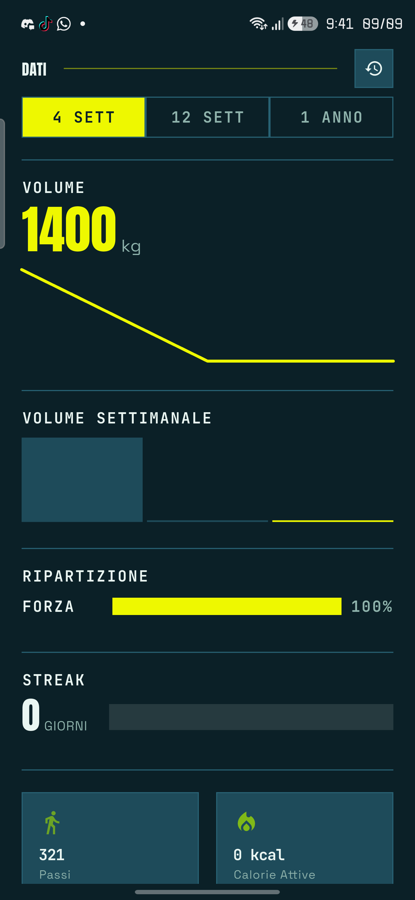
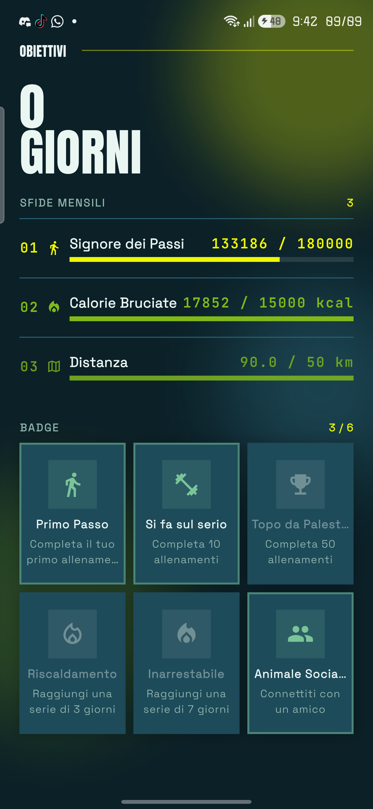
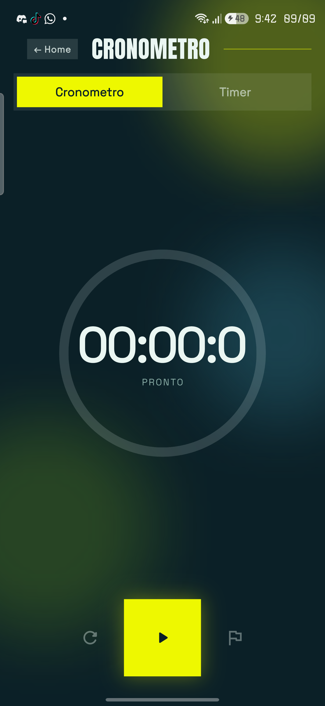
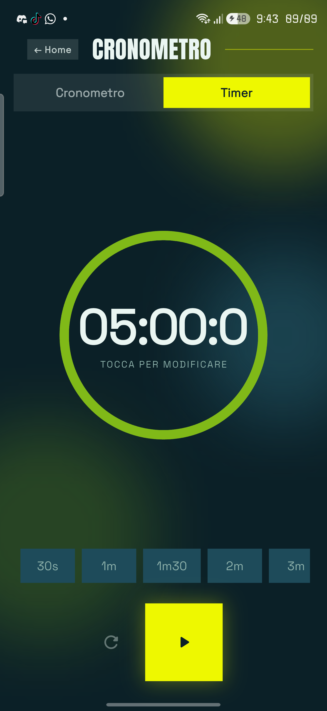
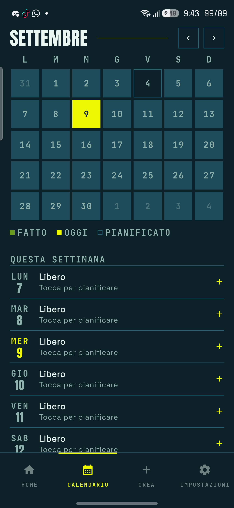
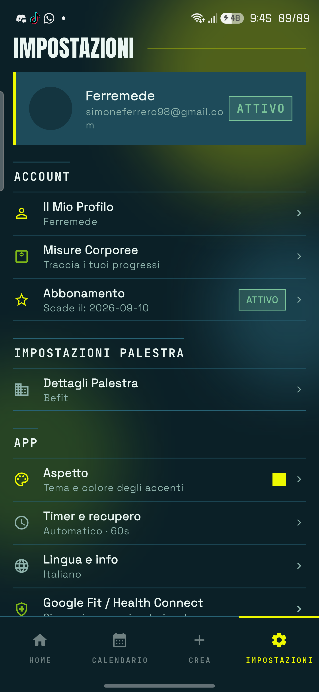
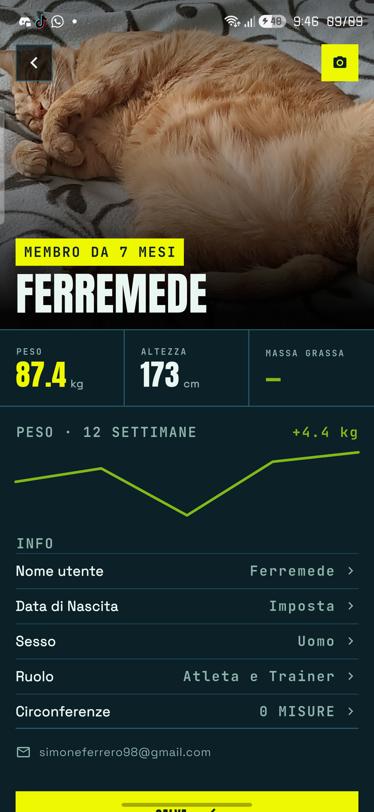
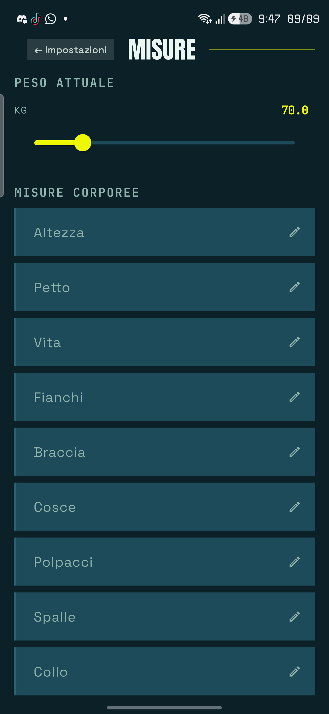
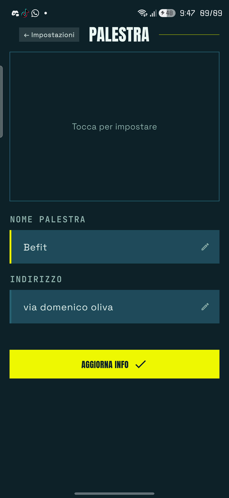
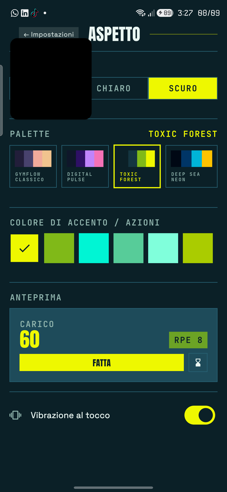
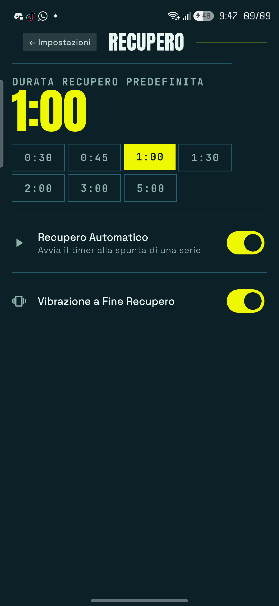
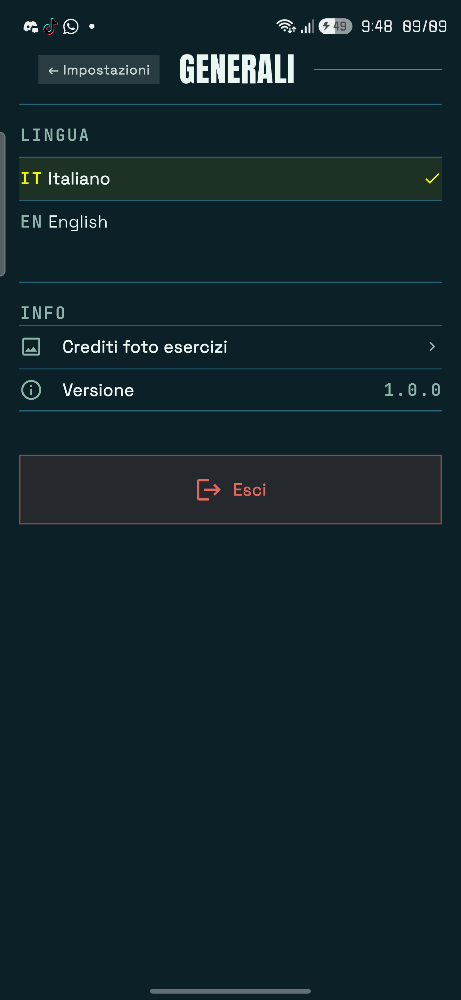
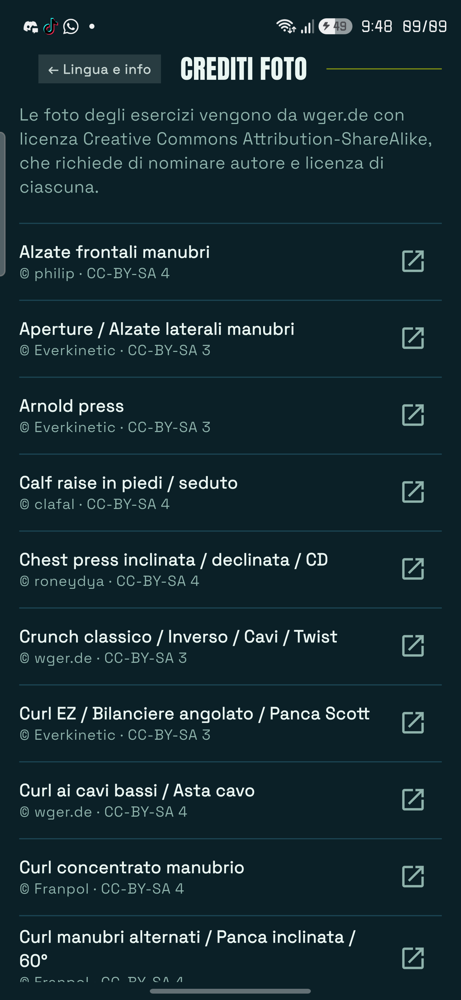
Non raggiunte in questa sessione di navigazione — da catturare in un secondo passaggio prima di considerare l'inventario completo: